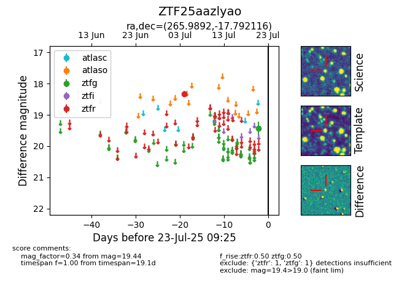

Target ZTF25aazlyao at 2025-07-23 12:37, see:
FINK: fink-portal.org/ZTF25aazlyao
Lasair: lasair-ztf.lsst.ac.uk/objects/ZTF25aazlyao
ALeRCE: alerce.online/object/ZTF25aazlyao
alt names
ZTF25aazlyao (ztf,fink)
coordinates:
equatorial (ra, dec) = (265.9892,-17.79212)
galactic (l, b) = (9.3394,+6.11906)
photometry
last ztfg=19.44, ztfr=18.33
1 ztfg, 1 ztfr detections
